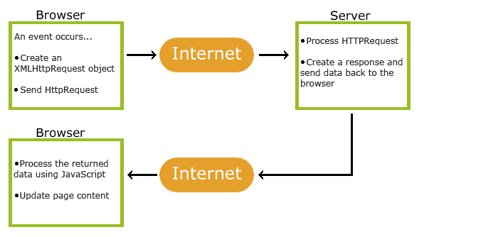

1、写出自定义数据库连接池的步骤 2、写出DBCP连接池涉及的类和核心方法 3、写出C3P0连接池涉及的类和核心方法 4、写出Druid连接池涉及的类和核心方法 5、写出DbUtils的核心类和方法
1、Cookie的数据库连接池的使用 2、DbUtils的使用
1、什么是Ajax 2、Ajax工作原理 3、Ajax的使用 4、Ajax的综合练习
1、熟悉什么是Ajax 2、掌握Ajax工作原理 3、掌握Ajax的使用 4、熟练Ajax的综合练习
JSON(JavaScript Object Notation, JS 对象标记) 是一种轻量级的数据交换格式。它基于 ECMAScript (w3c制定的js规范)的一个子集，采用完全独立于编程语言的文本格式来存储和表示数据。简洁和清晰的层次结构使得 JSON 成为理想的数据交换语言。 易于人阅读和编写，同时也易于机器解析和生成，并有效地提升网络传输效率。
[] 表示数组
{} 表示对象
"" 表示是属性名或字符串类型的值
: 表示属性和值之间的间隔符
, 表示多个属性的间隔符或者是多个元素的间隔符
要解析的字符串：
xxxxxxxxxx//对象嵌套数组嵌套对象String json1="{'id':1,'name':'JAVAEE-1703','stus':[{'id':101,'name':'刘一','age':16}]}";//数组String json2="['北京','天津','杭州']";初始的类：
Student.java
xpublic class Student { private int id; private String name; private int age; public int getId() { return id; } public void setId(int id) { this.id = id; } public String getName() { return name; } public void setName(String name) { this.name = name; } public int getAge() { return age; } public void setAge(int age) { this.age = age; } public Student(int id, String name, int age) { super(); this.id = id; this.name = name; this.age = age; } public Student() { super(); } public String toString() { return "Student [id=" + id + ", name=" + name + ", age=" + age + "]"; }}Grade.java
xxxxxxxxxxpublic class Grade { private int id; private String name; private ArrayList<Student> stus; public Grade(int id, String name, ArrayList<Student> stus) { super(); this.id = id; this.name = name; this.stus = stus; } public Grade() { super(); } public String toString() { return "Grade [id=" + id + ", name=" + name + ", stus=" + stus + "]"; } public int getId() { return id; } public void setId(int id) { this.id = id; } public String getName() { return name; } public void setName(String name) { this.name = name; } public ArrayList<Student> getStus() { return stus; } public void setStus(ArrayList<Student> stus) { this.stus = stus; }} xxxxxxxxxxpublic class JSONTest { //解析JSON public void test1() throws JSONException{ //对象嵌套数组嵌套对象 String json1="{'id':1,'name':'JAVAEE-1703','stus':[{'id':101,'name':'刘一','age':16}]}"; //数组 String json2="['北京','天津','杭州']"; //1、 //解析第一层---对象 JSONObject jObject1=new JSONObject(json1); Grade grade=new Grade(); grade.setId(jObject1.getInt("id")); grade.setName(jObject1.getString("name")); ArrayList<Student> stus=new ArrayList<>(); grade.setStus(stus); //解析第二层----数组 JSONArray jsonArray2=jObject1.getJSONArray("stus"); //遍历数组获取元素----对象 for(int i=0;i<jsonArray2.length();i++){ //解析第三层----对象 JSONObject jObject3=jsonArray2.getJSONObject(i); Student student=new Student(jObject3.getInt("id"), jObject3.getString("name"), jObject3.getInt("age")); grade.getStus().add(student); } System.out.println(grade); //2、 //获取数组对象 JSONArray jArray=new JSONArray(json2); ArrayList<String> list=new ArrayList<>(); //遍历获取元素 for(int i=0;i<jArray.length();i++){ //jArray.optString(i);//等价于getXXX list.add(jArray.getString(i)); } System.out.println("解析结果："+list); } //生成JSON public void test2() throws JSONException{ JSONObject jo1=new JSONObject(); jo1.put("id", 1001); jo1.put("name", "范老"); jo1.put("age", 20); JSONObject jo2=new JSONObject(); jo2.put("id", 1002); jo2.put("name", "平平"); jo2.put("age", 19); JSONArray ja2=new JSONArray(); ja2.put(jo1); ja2.put(jo2); JSONObject jo3=new JSONObject(); jo3.put("id", 11); jo3.put("name", "JAVAEE-1704"); jo3.put("stus",ja2); String json=jo3.toString(); System.out.println(json); }} xxxxxxxxxxpublic class FASTJson { //解析 public void test1() { // 对象嵌套数组嵌套对象 String json1 = "{'id':1,'name':'JAVAEE-1703','stus':[{'id':101,'name':'刘铭','age':16}]}"; // 数组 String json2 = "['北京','天津','杭州']"; //1、 //静态方法 Grade grade=JSON.parseObject(json1, Grade.class); System.out.println(grade); //2、 List<String> list=JSON.parseArray(json2, String.class); System.out.println(list); } //生成 public void test2(){ ArrayList<Student> list=new ArrayList<>(); for(int i=1;i<3;i++){ list.add(new Student(101+i, "码子", 20+i)); } Grade grade=new Grade(100001,"张三", list); String json=JSON.toJSONString(grade); System.out.println(json); }} xxxxxxxxxxpublic class JackSonTest { //解析 public void test1() throws Exception{ // 对象嵌套数组嵌套对象 String json1 = "{\"id\":1,\"name\":\"JAVAEE-1703\",\"stus\":[{\"id\":101,\"name\":\"刘一\",\"age\":16}]}"; // 数组 String json2 = "[\"北京\",\"天津\",\"杭州\"]"; //1、 ObjectMapper mapper=new ObjectMapper(); Grade grade=mapper.readValue(json1, Grade.class); System.out.println(grade); //2、 ArrayList<String> list=mapper.readValue(json2, new TypeReference<ArrayList<String>>() { }); System.out.println(list); } //生成 public void test2() throws JsonProcessingException{ ArrayList<Student> list=new ArrayList<>(); for(int i=1;i<3;i++){ list.add(new Student(101+i, "码子", 20+i)); } Grade grade=new Grade(100001,"张三", list); ObjectMapper mapper=new ObjectMapper(); //将对象转换为JSON格式字符串 String json=mapper.writeValueAsString(grade); System.out.println(json); }}AJAX 是一种在无需重新加载整个网页的情况下，能够更新部分网页的技术。
AJAX = 异步 JavaScript 和 XML。
AJAX 是一种用于创建快速动态网页的技术。
通过在后台与服务器进行少量数据交换，AJAX 可以使网页实现异步更新。这意味着可以在不重新加载整个网页的情况下，对网页的某部分进行更新。
传统的网页（不使用 AJAX）如果需要更新内容，必需重载整个网页面。
有很多使用 AJAX 的应用程序案例：新浪微博、Google 地图、开心网等等。

AJAX是基于现有的Internet标准，并且联合使用它们：
html代码，上面的 AJAX 应用程序包含一个 div 和一个按钮。
div 部分用于显示来自服务器的信息。当按钮被点击时，它负责调用名为 loadXMLDoc() 的函数：
xxxxxxxxxx<div id="myDiv"><h2>使用 AJAX 修改该文本内容</h2></div><button type="button" onclick="loadXMLDoc()">修改内容</button>接下来，在页面的 head 部分添加一个